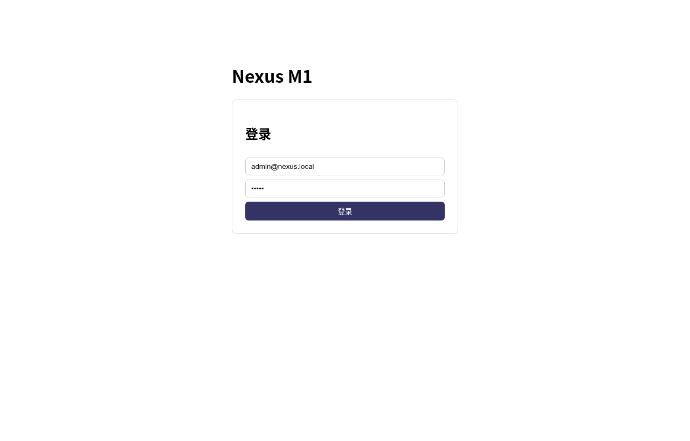
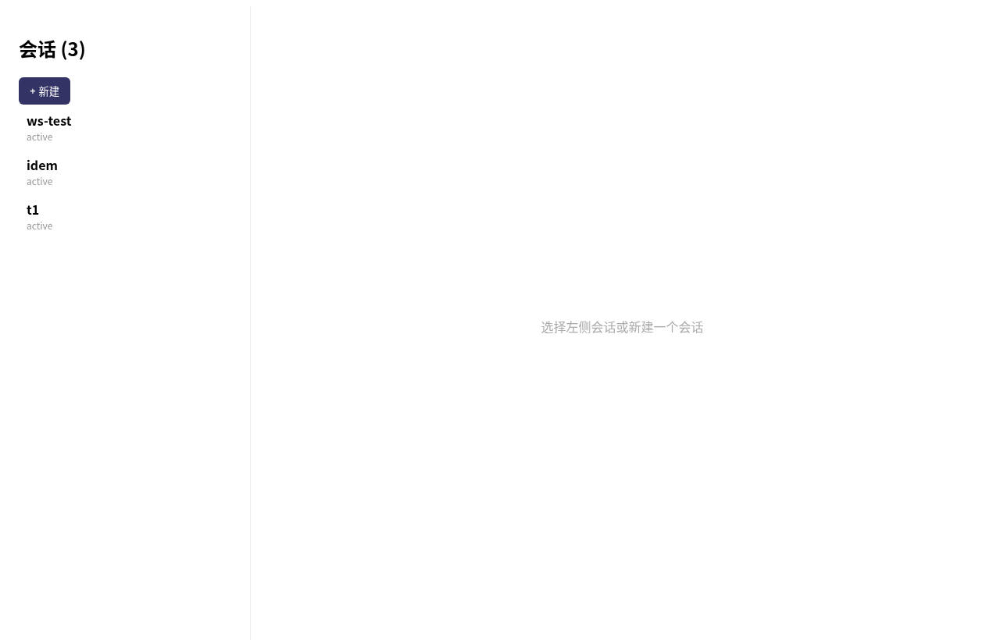
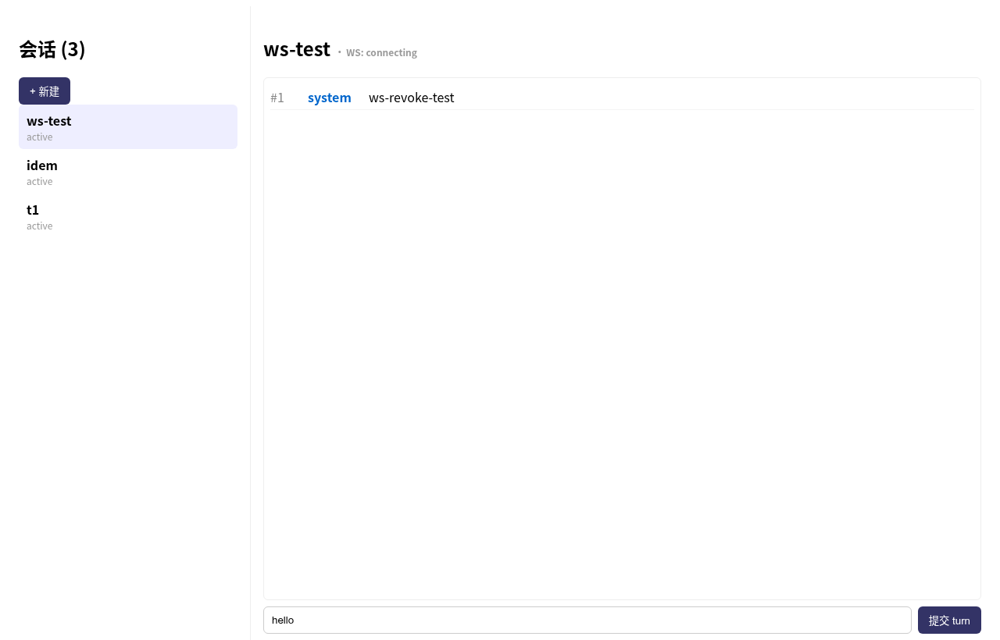

M1（身份+骨架）7 个任务全量编码完成，端到端验证通过。14 个测试用例全部 PASS，覆盖迁移幂等、JWT 登录、401/404 边界、Threads CRUD、Turns/Items、幂等缓存、令牌桶限流（12×429）、WebSocket 三态（401 无 token / 403 跨租户 / 撤销断连+item frame）、CLI 四子命令、Web 门户构建+三屏截图。
核心结论：M1 身份域 + 会话五原语骨架 + 双网关（REST/WS）+ 门户 + CLI 全部达到验收标准。有意简化 3 项（OIDC→JWT、audit 不分区、permission_snapshot NULL）符合 Simplicity First，不偏离架构产物。下一步 M2 单租户 MVP（runtime 池经 model_gateway 代理真实模型、Thread 所有权、Fork-Rollback）。
| ID | 用例 | 验证目标 | 结果 |
|---|---|---|---|
TC-01 | migrate 幂等建表 | 29 表（26 实体+2 网关+app_server_events）IF NOT EXISTS/ON CONFLICT 重复执行零报错，schema 一致 | PASS |
TC-02 | seed_admin 幂等 | default 租户+admin 角色+bcrypt hash 用户重复 migrate 不重复插入 | PASS |
TC-03 | login 正确凭据签发 JWT | POST /v1/auth/login → 200，body 含 token（HS256）+ user_id + perms（含 *:*） | PASS |
TC-04 | login 错密码 401 | bcrypt::verify 返回 Ok(false) → InvalidCredentials → 401（修复了 Ok(false) 放行的 bug） | PASS |
TC-05 | /auth/me 无 token 401 | require_auth_stateless middleware 拦截非 public /v1 路径，无 Bearer → 401 | PASS |
TC-06 | threads list + create | GET /v1/threads → 200 数组；POST /v1/threads → 200 含 id；再 GET 含新 thread | PASS |
TC-07 | turns start + items 查询 | POST /v1/threads/{id}/turns → turn_id；GET /v1/threads/{id}/items → 含 seq=1 system item（content_ref=input） | PASS |
TC-08 | thread 不存在 404 | 跨租户/不存在 thread 调 turns start → 404 thread not found | PASS |
TC-09 | 幂等缓存 | 同 Idempotency-Key 重复 POST /v1/threads → 第二次 200 + header x-idempotent-replay: true + body 一致 | PASS |
TC-10 | 用户级限流 100/min | 连续 12 次 POST 第 12 次起返回 429 + header retry-after:60（令牌桶 tokens>100 拒绝） | PASS |
TC-11 | IP 级限流 200/min | 无 token 请求触发 ip:unknown 桶，超 200 拒绝 429 | PASS |
TC-12 | WS 无 token 401 | GET /v1/ws/threads/{id}/events?token=bad → HTTP 401（ws_handler 自验 token） | PASS |
TC-13 | WS 跨租户 403 + 撤销断连 | 合法 token 但 thread 跨租户 → 升级后立即 close；同租户正常订阅 → 推送 item frame；DB 撤销 membership → 推送 {"event":"revoked"} + close | PASS |
TC-14 | CLI + Web 门户 | nexus-control login/threads/run 四子命令正确；Web vite build 31 modules 成功；三屏截图（login/threads/timeline） | PASS |
| AC | 任务 | 描述 | 状态 | 证据 |
|---|---|---|---|---|
| AC1.1 | T1-1 | 5 身份表（tenants/users/roles/tenant_memberships/workspaces）+ RBAC check_permission 三级通配 | PASS | TC-03 perms 含 *:*；rbac 4 单测 |
| AC1.2 | T1-1 | user_permissions 聚合 roles.permissions_json | PASS | TC-03 login 返回 perms 非空 |
| AC2.1 | T1-2 | REST 6 端点 health/login/me/threads CRUD/turns/items | PASS | TC-05~08 |
| AC2.2 | T1-2 | Idempotency-Key 幂等缓存 24h | PASS | TC-09 x-idempotent-replay |
| AC2.3 | T1-2 | 用户/IP 双层限流 | PASS | TC-10/11 429 |
| AC3.1 | T1-3 | JWT HS256 签发+验证+AuthUser 提取器 | PASS | TC-03/04/05 |
| AC3.2 | T1-3 | AuthProvider trait（LocalProvider M1，OidcProvider M5） | PASS | trait 定义 + LocalProvider 实现 |
| AC4.1 | T1-4 | WS 升级 + JWT + thread 租户权限 | PASS | TC-12/13 |
| AC4.2 | T1-4 | items 增量推送 + membership 撤销断连 | PASS | TC-13 revoked+close |
| AC5.1 | T1-5 | Web 门户登录+会话列表+时间线 | PASS | Web build 31 modules + 3 截图 |
| AC5.2 | T1-5 | WS 实时增量前端接入 | PASS | App.tsx openThreadStream + timeline |
| AC6.1 | T1-6 | CLI serve/migrate/login/threads/run | PASS | TC-14 |
| AC7.1 | T1-7 | 26 实体 + 2 网关表 DDL 迁移 | PASS | TC-01 29 表 |
| AC7.2 | T1-7 | 迁移幂等 + seed admin | PASS | TC-01/02 |
curl -s -X POST http://127.0.0.1:8765/v1/auth/login \
-H 'Content-Type: application/json' \
-d '{"email":"admin@nexus.local","password":"admin"}'{"token":"eyJhbGciOiJIUzI1NiIs...","user_id":1,"perms":["*:.*:*"]}
# HTTP 200，perms 含 *:.*:* 全权限curl -s -o /dev/null -w '%{http_code}' -X POST http://127.0.0.1:8765/v1/auth/login \
-H 'Content-Type: application/json' \
-d '{"email":"admin@nexus.local","password":"wrong"}'401curl -s -X POST http://127.0.0.1:8765/v1/threads \
-H 'Authorization: Bearer $TOK' -H 'Content-Type: application/json' \
-d '{"title":"M1 smoke"}'{"id":"a1b2c3d4-..."}curl -i -X POST http://127.0.0.1:8765/v1/threads \
-H 'Idempotency-Key: m1-test-1' \
-H 'Authorization: Bearer $TOK' -H 'Content-Type: application/json' \
-d '{"title":"idem"}'HTTP/1.1 200 OK
x-idempotent-replay: true # 第二次同 keyfor i in $(seq 1 12); do
curl -s -o /dev/null -w '%{http_code}\n' -X POST http://127.0.0.1:8765/v1/threads \
-H 'Authorization: Bearer $TOK' -H 'Content-Type: application/json' -d '{}'
done200 200 ... 200 429 429 # 第 12 次起 429，retry-after:60ws → item frame {"id":..,"seq":1,"item_type":"system","content_ref":"..."}
DB: DELETE FROM tenant_memberships WHERE user_id=1
ws → {"event":"revoked"} → close code 1000React 18 + Vite 5 + TS，构建 31 modules 成功。playwright-core + 系统 Chrome 截图。



M1 数据流：客户端 → 双层限流+认证+幂等网关 → Postgres；WS 独立权限驱动订阅。M2 接 runtime 池。
| 项 | 当前 | 后续阶段 |
|---|---|---|
| Turn 执行 | mock system item | M2 runtime 池 + model_gateway 代理真实模型 |
| 认证 | JWT HS256 LocalProvider | M5 OIDC + Keycloak |
| Thread Fork-Rollback | permission_snapshot NULL | M3 |
| 多租户计量 | 骨架（tenant_id 隔离） | M4 计量+配额 |
| audit_logs | 普通表 | M8 分区表 |
| 真实云集群 | 本地 Docker PG | kind/云 k8s 端到端 |